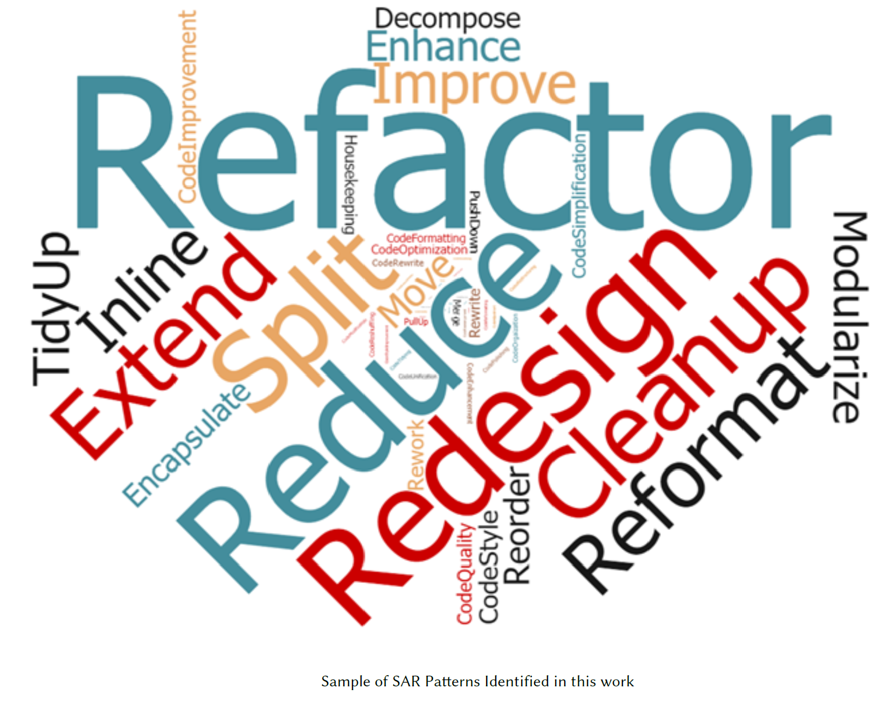

Upon a closer inspection of these refactoring patterns, we have made several observations: we noticed that developers document refactoring activities at different levels of granularity, e.g., package, class, and method level. Furthermore, we observe that developers state the motivation behind refactoring, and some of these patterns are not restricted only to fixing code smells, as in the original definition of refactoring in Fowler’s book, i.e., improving the structure of the code. For instance, developers tend often to improve certain non-functional attributes such as the readability and testability of the source code. Additionally, developers occasionally apply the “Don’t Repeat Yourself” principle by removing excessive code duplication. A few patterns indicated that developers refactor the code to improve internal quality attributes such as inheritance, polymorphism, and abstraction. We also noticed the application of a single responsibility principle which is meant to improve the cohesion and coupling of the class when developers explicitly mentioned a few patterns related to dependency removal.
Further, we observe that developers tend to report the executed refactoring operations by explicitly using terms from Fowler’s taxonomy; terms such as inline class/method, Extract Class/Superclass/Method or Push Up Field/Method and Push Down Field/Method.
The generic nature of some of these patterns was a critical observation that we encountered, i.e., many of these patterns are context specific and can be subject to many interpretations, depending on the meaning the developer is trying to convey. For instance, the pattern fixed a problem is descriptive of any anomaly developer encountered and it can be either functional or non-functional. Since in our study, we are interested in textual patterns related to refactoring, we decided to filter this list down by reporting patterns whose frequency in commit messages containing refactoring is significantly higher than in messages of commits without refactoring. The rationale behind this idea is to identify patterns that are repeatedly used in the context of refactoring, and less often in other contexts. Since the patterns were extracted from 111,884 messages of commits containing refactoring (we call them refactoring commits), we need to build another corpus of messages from commits that do not contain refactorings (we call them non-refactoring commits). As we plan on comparing the frequency of keywords between the two corpora, i.e., refactoring and non-refactoring commit messages, it is important to adequately choose the non-refactoring messages to ensure fairness. To do so, we follow the following heuristics: we randomly select a statistically significant sample of commits (confidence level of 95%), 1) chosen from the same set of 800 projects that issued the refactoring commits; 2) whose authors are from the same authors of the refactoring commits; 3) whose timestamps are in the same interval of refactoring commits timestamps; 4) and finally, the average length of commit messages are approximately close (118 for refactoring commits, and 120 for non-refactoring commits).
